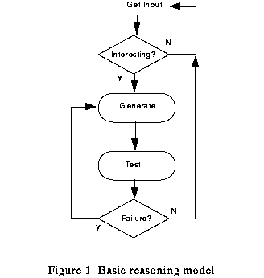
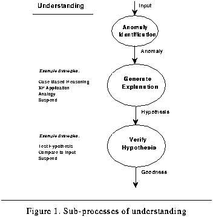
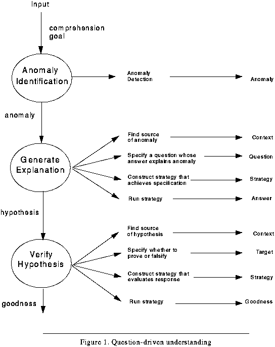
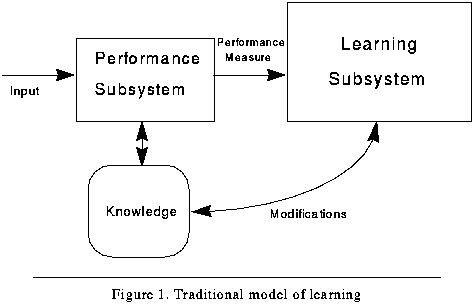
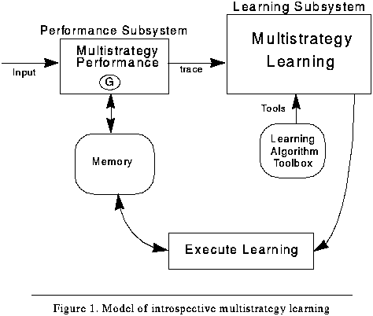
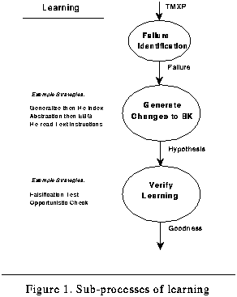
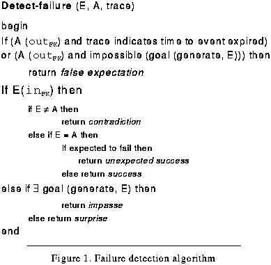
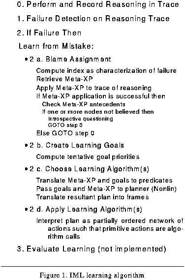
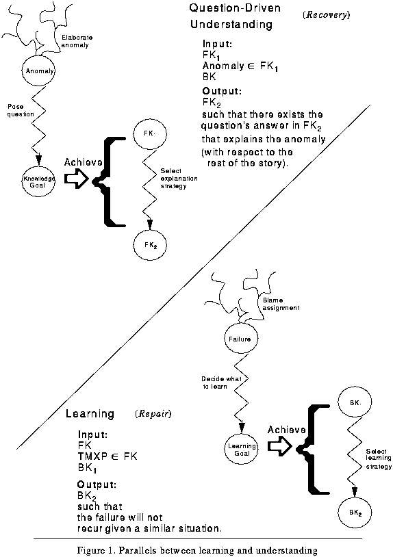

Table of Contents
Table of Contents
 Previous Chapter
Previous Chapter
Table of Contents
Previous Chapter
In most cognitive science theories, problem solving, understanding and learning are distinct processes that have few family resemblances. They each play an integral role in a cognitive milieu, but are, for the most part, studied independently with little regard to one another. But as we have emphasized, the relationship between reasoning (either problem solving or comprehension) and learning is intimate because an introspective learning component must be able to explain and understand failures in the reasoning component, if learning is to remain effective (i.e., if multiple learning methods woven into its learning-strategy are not to interact negatively). Here we develop an interrelated theory of these cognitive functions and show the close relationships between them by comparison and by contrast.
Having examined the content theory of introspective multistrategy learning during Part Two, this chapter presents a process theory of both understanding and learning. Section 5.1 reviews the major suppositions of the theory presented in Parts One and Two. These assumptions also support the models developed in this chapter. Section 5.2 outlines a generalized process theory for multistrategy reasoning that applies to both problem-solving and comprehension tasks. Section 5.3 refines the process theory specifically to comprehension tasks and then specializes it further to account for the task of story understanding. Section 5.4 develops a process model of learning that parallels the model of understanding. Section 5.5 then compares the model of understanding from Section 5.3 with the learning model of Section 5.4.
The results, conclusions and the very structure of this theory depends on the broad assumptions enumerated in Figure 40. Although several sections of this document have already discussed these assumptions, this section briefly reiterates them to provide a review. These assumptions allow us to be specific as to the kinds of models and the details associated with them that will be presented in this chapter.
First and foremost, we assume that cognition is essentially goal-directed processing of a given input using the reasoner's knowledge (see the discussion in Section 3.3). In pursuit of such goals a cognitive system produces expectations of the future. Our focus is therefore on the deliberative and top-down components of thought, rather than on the data-driven or situation-specific factors.
Second, all reasoning can be cast in a multistrategy framework. For the purposes of this document, problem-solving, understanding, and learning are all considered to involve the choice of strategies in some sense. Whereas much of this thesis has already argued that learning is multistrategy affair, Section 5.2 will argue that both problem-solving and understanding should be considered to involve an executive control process that determines a reasoning strategy.
A third assumption is that the reasoner's knowledge and past experience is memory-based, and therefore subject to storage and retrieval constraints, particularly the indexing problem. The indexing problem (see the discussion in Section 3.3.1) is the problem of choosing cues, or features of an input, to be used as indexes for retrieving from memory the knowledge structures necessary to process an input. Thus, in such memories, knowledge organization is a significant concern for both reasoning and learning functions.(1)
Finally, we assume a failure-driven approach to learning and reasoning (see the introductory comments of Chapter III), which concentrates on contradictions, impasses, false expectations, surprises, and unexpected successes to indicate when attentional resources are appropriate. A failure is defined as a computational outcome other than what is expected or a lack of some outcome (or appropriate expectation).
Given such assumptions, the cognitive tasks of reasoning, understanding, and learning have interesting parallels in the overall theory of introspective multistrategy learning.
In a classic study of human problem-solving, Newell and Simon (1972) outlined a model that humans appear to follow when engaged in reasoning about complex problems. An initial process first translates the perception of the external environment into an internal representation of the problem. Second, the reasoner selects a method such as recognition or heuristic search by which to solve the problem.(2) Third, the method is applied to the problem. Finally, if the problem is not solved, then the reasoner either chooses another method, reformulates the problem, or quits. In their framework, the emphasis is upon representation of the problem and multiple problem-solving methods between which the reasoner must decide. We likewise emphasize multistrategy components that select and construct strategies during reasoning and during learning.
In expert system development, a crucial engineering problem is to match an appropriate inference method to the task domain of concern. The generic-task view of Chandrasekaran (1989), Steels' (1990) study of componential frameworks, and McDermott's (1988) work on role-limiting methods all lend additional support for the multistrategy assumption by arguing that different general methods exist that apply to specific problem-solving tasks. More than one method may apply to a given task or subtask, so strategy selection and composition is unavoidable in problem solving, whether performed by the knowledge engineer or the knowledge-based system itself.(3)
Meta-level tools have also been developed for expert systems to automate the generation of knowledge acquisition assistants. For instance, the PROTÉGÉ-II knowledge acquisition shell (Puerta, Egar, Tu, & Musen, 1992) combines domain- and task-independent mechanisms to construct appropriate problem-solving methods (e.g., heuristic classification and skeletal-plan refinement) that fit a given problem domain. Therefore, rather than one basic mechanism, many different processes and algorithms must account for cognition. The open question is how are they combined. Punch, Goel, and Brown (1996) report a robust mechanism for selecting between a fixed set of alternatives called the sponsor-selector mechanism. This control mechanism has been tested in applications involving planning, design and assembly. Hence, the strategy construction problem (which subsumes the selection task) is clearly pertinent to problem solving, as well as learning.
The first paragraph of Chapter I specified the operational definition of learning as "... given some computational performance task specified by the system's goals, context and some input, if a failure occurs during the task, the problem is to construct a learning strategy with which to repair the faulty components of the system." In similar terms, an operational definition of a generalized reasoning task can be stated that subsumes both understanding and problem solving.
As with the characterization of learning, the top level of computation concerns the choice of a reasoning strategy, rather than the choice of a solution operator. The outermost control is thus an executive reasoning process at the meta-level. This multi-level reasoning is consistent with the approach of the MOLGEN system (Stefik, 1981), in which a plane of reasoning exists in both the design plane (the reasoning task in MOLGEN's domain) and the meta-plane (the task of choosing an operator in the design plane). As a result of this division, to choose a reasoning strategy the system should understand and model its own algorithms. Though consistent with Stefik, however, the model here does not presuppose separate planes of computation.
In the formulation presented here, reasoning is a variant of the generate-and-test paradigm, with the enhancement of a front-end identification process to filter anomalous, or otherwise interesting, input (see Figure 41). So, if no unusual input to the system exists, no significant resources will be expended on reasoning. Therefore, in the absence of interesting input, an understander will skim its data; a problem solver will simply act reactively or habitually. In such situations there is no deliberation. With interesting input, however, a reasoner should construct and execute a strategy, thus generating some response that resolves the anomaly that sparked the interest. Subsequently, the result is verified by some means constructed by the reasoner. If the result is falsified, then the generation process begins anew.
 Figure 41. Basic reasoning model
The research presented here has concentrated on developing the details of first-order reasoning in the form of understanding or comprehension, rather than problem solving. Understanding involves building causal explanations of the input. These explanations provide conceptual coherence by incorporating the current input into pieces of the previous input and by generating expectations about subsequent input. The understander skims a stream of input by instantiating schemas to fit each input item and linking it into the previous concepts of the story, unless the input is anomalous. If an anomalous situation is identified, then the understander must explain the input by elaborating it beyond simple schema instantiation.
Figure 42 shows three processes in the general understanding task. First, the understander needs to identify anomalous (or otherwise interesting)(4) input; second, it generates a hypothetical explanation to explain the anomaly; and third, it verifies the generated explanation. Both explanation generation and verification involve strategy construction. The understander must construct a method to generate an explanation and to construct a method to test the veracity of the explanation. A number of possible strategies from which the system may select are shown in Figure 42. With respect to the more generic model shown in Figure 41, the two understanding sub-processes of constructing hypothetical explanations and verifying hypotheses correspond to the generate and test processes, respectively.(5)
 Figure 42. Sub-processes of understanding
With this model, an operational statement of story understanding is as follows:
Story-understanding is the processing task chosen to test our theory of introspection and learning. In particular, this research develops an explicit, if somewhat simplified, model of the processing performed by an implementation of question-driven story understanding. The model of understanding used in this thesis is a modification of the reasoning method used by the AQUA story understanding system (Ram, 1991, 1993, 1994). The implementation is in a program called Meta-AQUA.
As an example, Meta-AQUA might process a story about a polite, Memphis musician named Elvis boarding with a young, Southern family.(6) While processing the story, Meta-AQUA constructs a model of the characters and the actions involved in the story. When the story reveals that Elvis occasionally smokes marijuana in the house, endangering his safety and freedom, as well as that of the family's with which he lives, the system detects an anomaly that must be explained to fully understand the story. The event is anomalous because the model of Elvis constructed before the point of his taking drugs was one of a law-abiding citizen. A conflict occurs as a result of trying to unify the picture of Elvis as a typical, adult male (assumed to be happy) with the picture of him as an individual likely to commit a crime (thus, apt to be desperate).
To explain the incongruity, the system must understand the anomaly. Meta-AQUA accomplishes this by consulting a decision model (Ram, 1990a) that describes the planning process an agent performs when considering a choice of actions in the world. The objective of the analysis is to refine the nature of the anomaly and to identify the parts of the story that bear on the anomaly, so as to more clearly ascertain what needs to be explained to resolve the anomaly. An analysis of the story yields the facts that Elvis is not desperate, yet at the same time he performs an act that threatens the loss of his liberty. This situation is certainly anomalous because the decision model asserts that people value the goal of preserving their own freedom above most other goals they possess, other than the goal preserving their lives. A goal competition (Wilensky, 1983) therefore exists that Meta-AQUA must explain.
Following this analysis, Meta-AQUA poses a series of questions about the anomaly and the context of the story surrounding the anomaly. In this case, the system asks what would cause a man to carry out an action he knew could result in his own arrest. If this question can be answered, then the anomaly would likely be resolved, and the story would be considered understood.
To explain events in a story, Meta-AQUA can generate two types of explanations. Physical explanations give a causal account of events according to a model of the way things work in the world, whereas volitional explanations give a causal account of why people perform the acts they do in the world. The former class links physical events (such as the burning of flammable materials) with probable causes (such as the lighting of materials with combustible devices). The latter type of explanation links the actions of agents in a story to their goals and beliefs, thus providing a motivation for story characters. In the Elvis scenario, Meta-AQUA retrieves, instantiates, and adapts a cigarette-smoking explanation, which produces expectations in the story (e.g., that the smoking will relieve a nervous emotional state). It can either look for verification of the explanation by tying it into the story, or it can suspend the explanation until a later point in time. The explanation can be verified when subsequent sentences in the story confirm the hypothesis.
Figure 43 diagrams the process decomposition that produces an understanding of Elvis' situation.(7) First the system performs simple anomaly detection. An anomaly is signaled when either the input conflicts with known facts in the BK, or when the system is otherwise unable to successfully incorporate the representation of the input into the current story model in the FK. An explanation process then attempts to resolve the anomaly by constructing a causal account of the input with respect to both the story and the system's knowledge. The resulting hypothesis is then tested for degree of fit or believability.
 Figure 43. Question-driven understanding
Both the generate and the verify components of understanding have four steps (again see Figure 43). In effect, given some anomalous state the reader encounters, if it is to explain the anomaly and thus understand the story, it must answer the following questions:
� How did the anomaly occur?
� What needs to be explained?
� How can I explain this?
Subsequently it will:
� Resolve the anomaly by generating an explanation.
The initial step is to elaborate the anomaly in order to provide a focus that is relevant to determining what occurred within the story. The reasoner also refines the anomaly in such a way that a specific question can be posed. Since the specification of the explanation process must be more precise than simply "explain the anomaly," it adds little benefit to simply ask what the reason is for the anomaly. Although it may be clear that some representation for a character like Elvis indicates that he isa typical-person.0, that a later representation of him isa criminal-person.0, and that the two representations will not unify in the program internals, a better characterization of the anomaly provides specific circumstances (including motivations, states, goals, and beliefs) in terms of both a model of normative decisions and a model of the current story that point to possible locations of the anomaly. Moreover, by providing a story context, a system avoids much search, since the context should contain only the pertinent details known so far. A talented programmer can set up the anomalies that its system knows about in such a way that resolution is all but guaranteed. It is better to have some process that attempts to focus the anomaly so that conditions not envisioned by the programmer can also be addressed.
Given such detail, the function of the next step is to provide a set of questions that represents gaps in the model of the story with respect to the anomaly. Any such question can be viewed as a knowledge goal (Cox & Ram, 1995; Ram, 1989, 1991; Ram & Hunter, 1992), since it specifies the knowledge states that, if achieved, would provide coherence to both the story and what the system knows (its BK). Following this specification the system can pick an explanation strategy that will answer these questions (i.e., achieve the knowledge goals). Once a strategy is determined, the program can generate the explanation.
The first step in explanation generation is similar to the blame assignment step in learning, the second is goal specification, and the third is strategy construction. After performing these steps, the reasoner can execute the reasoning method. Like our learning model (see Section 5.4) that offers no new learning algorithms per se and instead presents a method of choosing between and combining a number of extant strategies, the reasoning model also concentrates on the strategy choices and combinations. Depending upon the given situation, a system may choose from case-based reasoning, analogy, explanation application, or any number of reasoning strategies for generation (see Figure 43). To perform a test of the resulting hypothesis, a reasoner may devise an experiment, ask someone, or simply wait, in the hope that the answer will be provided by future input.
To verify the hypothesized explanation, the verification process makes a similar four-step analysis. The first step, however, that of finding the source of the hypothesis, is known to follow in sequence from the generation process.(8) Step two is to determine whether to attempt to prove or disprove the hypothesis. Given a target approach, the system then needs to choose an algorithm best suited to achieving the goal. Once the algorithms have been selected and ordered, the hypothesis can then be evaluated.
Given such a model for the performance task, traces of system performance can be specified and recorded in declarative structures. As described in Section 4.4.1 (starting on page 81), a TMXP contains a decide-compute node (D-C-NODE) for each of the sub-processes of an understanding task; that is, it records the decision and the reasons behind each decision in every step of Figure 43. To understand what parts of the comprehension process are recorded in these knowledge structures, carefully compare Figure 43 (p. 113) with Figure 27 (p. 85). Both the generation and verification processes have four steps each of which correspond to a process field in a D-C-NODE. The four fields are input analysis, goal specification, strategy decision, and strategy execution. For each field, the record stores both the enabling conditions and the resulting state. For the first three fields, the D-C-NODE records the decision basis, and for the last field, it records the side-effects of the process.
If a failure occurs (as detected by the algorithm to be presented on page 121), the system suspends the understanding performance-task and invokes the learning task. When this happens, the trace of the reasoning along with a characterization of the failure (as determined by the failure detection algorithm) is passed to the learning process for introspective explanation. When learning abates, the system resumes the performance task.
In contrast to the first-order performance task, a similar model of the second-order learning task completes our theory of introspective multistrategy learning. When a failure occurs, learning processes inspect the traces of performance in order to explain the failure and decide what to learn. Subsequently, a learning strategy can be assembled and executed. Here we functionally justify such a process model, place it in the context of multistrategy systems, and overview the IML algorithm to be further refined in the next two chapters.
Simon (1983) defines learning as "changes in the system that are adaptive in the sense that they enable the system to do the same task or tasks drawn from the same population more efficiently and more effectively the next time" (p. 28). Thus, some performance task exists that receives an input and acts upon it given its knowledge dealing with that class of data. A measure of this performance is then passed to a learning task, whereupon it makes changes to the knowledge used by the performance system, depending on the success or failure of the performance. This general view of learning is diagramed in Figure 44.
 Figure 44. Traditional model of learning
For instance, students often learn to program computers in LISP, first knowing another language such as Pascal. But as LISP novices, the code that results from their problem solving is usually overly-extenuated, inefficient, buggy, and written in an imperative style with loops and block control-structures. As students learn to debug their programs better and acquire mastery of more LISP functions, the code becomes much more compact, efficient, bug-free, and written recursively within a functional programming style. The difference in performance is due to a change in the knowledge and skills used by the programmer both to understand and solve problems and to implement the resulting solutions. These conceptual changes come about from a removal of rigid, Pascal-like coding habits, an acquisition of new LISP techniques, and a reorganization of the applicability conditions for much of the knowledge relevant to the task of computer programming.
In contrast to Simon's definition, the Inferential Learning Theory of Michalski (1991, 1994)(9) defines a learning task as consisting of three components: some input (information), the BK, and a learning goal. Even though this description does not explicitly refer to the performance of a reasoning system, and so differs from IML theory, the concept of a learning goal is central to both Michalski's model and the model of learning presented here. The learning goal determines the relevant pieces of the input, the knowledge to be acquired, and the criteria for evaluating the learning. The model of learning presented here is consistent with these constraints, and, as championed by Michalski, concentrates on a multistrategy approach to learning whereby more than one learning strategy can be brought to bear upon a given learning task. Because the multistrategy approach applies equally well to both reasoning (in the form of either problem-solving or understanding) and to learning, this framework is a natural one for integrating the learning and the performance tasks.
Recent attention to multistrategy learning systems is evident from numerous sources in the machine learning literature (e.g., Carbonell, Knoblock & Minton, 1991; Michalski, 1993; Michalski & Tecuci, 1991, 1994) and in the psychological literature (e.g., Anderson, 1983, 1993; Wisniewski & Medin, 1991). Such research constitutes a functional approach that designates the kinds of strategies a learning architecture needs to perform and the conditions for applying each. Multistrategy learning systems are those that integrate several learning algorithms into a unified whole, and thus contrast with single-strategy systems such as Soar (Newell, 1990; Laird et al., 1986; Rosenbloom, Laird, & Newell, 1993) in which all learning is performed by a single learning mechanism. Whereas any learning in Soar reduces to the chunking mechanism, methods as disparate as explanation-based learning, similarity-based learning, deduction, abduction, constructive induction, and analogy can be directly included in the same multistrategy framework. In Soar, such learning strategies must be built up from the chunking mechanism via a production implementation (Steier et al., 1987/1993).(10)
Approaches to multistrategy learning fall into three broad categories, which we call strategy selection models, toolbox models, and cascade models. The common element in all these approaches is the use of multiple learning methods to allow the reasoning system to learn in multiple types of learning situations.
In strategy selection models, the reasoner has access to several learning strategies, each represented as a separate algorithm or method. Learning involves an explicit decision stage in which the appropriate learning strategy is identified, followed by a strategy application stage in which the corresponding algorithm is executed. Methods for strategy selection also differ. Pazzani's (1990a; 1994) OCCAM system, for example, tries each learning strategy in a pre-defined order until an applicable one is found; Reich's (1994) BRIDGER system uses a task analysis of the problem-solving task to determine the appropriate learning strategies for each stage of the task; Hunter's (1990a) INVESTIGATOR system represents prerequisites for application of each learning strategy; Cheng's (1995) ISM speedup mechanism manager optimizes the learning behavior of the Theo (Mitchell, Allen, Chalasani, Cheng, Etzioni, Ringuette, & Schlimmer, 1991) problem-solving architecture; and the Meta-AQUA system uses characterizations of reasoning failures to determine what to learn and, in turn, the learning strategies to use when building a learning plan.
Toolbox models are similar to strategy selection models in that they too incorporate several learning strategies in a single system. The difference is that these strategies are viewed as tools that can be invoked by the user to perform different types of learning. The tools themselves are available for use by other tools; thus, learning strategies may be organized as co-routines. An example of this approach is Morik's (1994) MOBAL system, in which learning occurs through the cooperation of several learning tools with each other and with the user. Another example of the toolbox class is the PRODIGY (Carbonell et al., 1991; Minton, Carbonell, Etzioni, Knoblock & Kuokka, 1987) system. The system combines explanation-based learning, case-based (analogical) learning, abstraction, experimentation, static analysis, and tutoring. However, the system is designed as a research test-bed for analyzing and comparing different methods, rather than as a system that chooses a learning method itself. Instead, the experimenter chooses a learning module to run against a given problem-solving test suite.(11)
In cascade models, two or more learning strategies are cascaded sequentially, with the output of one strategy serving as the input to another. For example, Danyluk's (1994) GEMINI system uses a cascade of explanation-based learning, conceptual clustering, and rule induction strategies, in that order, to combine analytical and empirical learning into a single learning system. Clearly, these categories of models are not exclusive of each other (e.g., a strategy selection system may choose to cascade learning strategies in certain circumstances), but they serve to characterize the major ways in which learning strategies may be integrated.
Research into multistrategy learning is useful on pragmatic grounds when complex worlds are the domains of learning systems. Such approaches allow for maximal flexibility. Significant interactions are present in multistrategy systems, however, that are not apparent in isolated systems. For example, if two algorithms modify the domain knowledge of the system, and a dependency exists between the two, such that one strategy modifies a part of the domain knowledge that the second one uses, then an implied sequencing must be enforced; that is, the first strategy must be applied before the second. Such dependencies do not exist in single-strategy systems. Research into multistrategy systems contributes to many such issues that pertain to applied systems.
The general model of learning from Figure 44 can be refined to a multistrategy framework as seen in Figure 45. Some input is processed by a multistrategy performance system in a manner dependent upon its goals, expectations, and the knowledge in its memory. A trace of the processing is passed to the learning subsystem. The learning module then uses different methods from a library or toolbox of standard algorithms to make changes to the knowledge in memory. Usually, the tools selected from the toolbox are chosen by the researcher (e.g., as is with the PRODIGY system. See Veloso & Carbonell, 1994, or Carbonell et al., 1991). The goal of this dissertation is to specify a method by which to automate this choice and combination.
 Figure 45. Model of introspective multistrategy learning
The performance system records its reasoning during story understanding in a TMXP trace structure as described in Section 4.4.1 (p. 81). These knowledge structures contain representations for each of the reasoning sub-processes: anomaly identification, hypothesis formation, and verification (see Figure 43 on page 113). For each, the structure records the considerations that prompted the process, the bases for making a reasoning strategy decision, and the result of strategy execution. After reasoning completes an inference chain, the reasoning trace is passed to a learning process if a failure is detected.
The learning model itself has three processes. It must monitor the performance system to check for failures, explain and learn from the failure when detected, and, in the ideal model, it should verify that the learning was reasonable. Figure 46 illustrates these three tasks and the information passed between them.
 Figure 46. Sub-processes of learning
The first process performs failure detection. As outlined in Section 3.2, five types of failures can occur. Failure detection inputs two structures (an expected outcome, E, and the actual outcome, A) and the trace of the reasoning producing these knowledge structures. The algorithm for this process is shown in Figure 47. The detection process occurs either during the verification phase of the performance task of the system or during the generation phase after a resumption of a suspended generation goal. This second condition occurs after the performance system previously tried to generate a hypothesis, but could not. The generation phase suspends the goal and new input later provides the answer. See impasse condition in Figure 47. Along with the trace, the process outputs a determination of which of the failures exist (if any) to the next phase.
 Figure 47. Failure detection algorithm
The second phase concerns the actual determination of the causes of failure and the construction of a learning strategy which is then executed. The strategies from which it may construct a learning plan is dependent upon the IMXP structures in memory. Although this phase will be dealt with in detail by the next section, alternate strategies that may result include combinations of fine-grained knowledge transmutations or more global approaches such as a student's strategy of re-reading instructions when all else fails. The output of the phase is an implicit hypothesis that the learning was correct along with an augmented trace. The changes to the BK from learning are attached to the TMXP and are indexed in memory where the changes occur.
The third phase concerns verification. Although beyond the scope of this thesis and more suitable for future research, verifying the learning could involve either of two strategies. The system could be reminded of a change to the BK (as associated with the TMXP and described above) at some future time when the changed knowledge is reused. The learning can then be checked as to whether it is effective. Alternatively, the system could actually make a deliberate test of the newly learned knowledge by trying to falsify the information. When either of these processes finish, the verification phase would output an evaluation of the quality of learning.
Ram and Cox (1994) have argued that three fundamental learning-processes must be performed if learning is to be effective in an open world where many sources of failure exist. The processes are referred to as blame-assignment (Birnbaum et al., 1990; Freed, Krulwich, Birnbaum & Collins, 1992; Minsky, 1961/1963; Stroulia, Shankar, Goel & Penberthy, 1992; Weintraub, 1991), deciding what to learn (Cox & Ram, 1995; Hunter, 1989, 1990b; Keller, 1986; Krulwich, 1991; Leake & Ram, 1993; Ram, 1991; Ram & Hunter, 1992), and learning-strategy construction (Cox & Ram, 1991; Ram & Cox, 1994; Michalski, 1991). In the event of a performance failure, these processes answer the following three questions:(12)
� How did the failure occur?
� What must be learned?
� How can this be learned?
Subsequently the learner will:
� Repair the background knowledge.
To justify our process decomposition that answers these three questions, we advance the following argument: To construct a strategy, a system needs to know what is supposed to be learned; to decide what needs to be learned, it must know the cause of failure; to determine the cause of the failure, it must perform blame assignment; and to perform complete blame assignment in many situations, it must reflect upon its own reasoning. The first subsection to follow elaborates the functional justifications for the process decomposition and the role introspection plays in them, whereas, the second subsection presents an overview of the algorithm that instantiates these processes.
To properly select an algorithm when constructing a learning strategy, the system must know what it needs to learn; it must have a learning goal or target. Imagine that the learning algorithms from which the system chooses are like operators in planning paradigms (Hunter, 1990b; Ram & Hunter, 1992). To select an operator effectively in planning systems, the system must have a goal toward which operators make progress; thus, selection of the actions that constitute steps of a plan is based on the goal of the system. Since operators have results and preconditions, they can be chained such that different operators are chosen on the basis of resultant states that satisfy the preconditions of, and therefore enable, other operators. Thus, they can be chained to produce a series of plan steps that eventually matches the plan goal. Similarly, as plan steps produce changes in the world, learning strategies produce changes in the system's BK. To produce productive changes in the BK, then, the system must have an appropriate learning goal.
Learning goals also provide a focus for learning and thus help to avoid the combinatorial explosion of inferences (Ram & Cox, 1994; Ram & Hunter, 1992). In general, most learning is intractable without some bias. In order to avoid considering all possible input, inferences from this input, and all possible changes to the BK that might improve performance, learning goals give direction to the learner, as do problem-solving goals to a general inference machine. Traditionally, a target concept (i.e., learning goal) is provided to a learning system (e.g., the target concept of a cup in Mitchell et al., 1986). This research enables a system to determine its own target of learning.
Furthermore, to generate the learning goal, the system must know the cause of the failure. Blame assignment (or, conversely, credit assignment) is a well-known problem, going back as far as Minsky (1961/1963), involving the construction of explanations for how and why a failure occurs (or how and why success occurs). Without having knowledge of what caused the system to fail at its reasoning task, it is difficult to know what to learn to avoid subsequent failures in like situations. Perhaps bottom-up reinforcement schedules (e.g., Sutton, 1992) or associative PDP nets (Rumelhart & McClelland, 1986) can help the system learn what to do without it knowing why, but surely no deliberative methods will be able to form a goal to modify the BK in any meaningful way without first analyzing the failure.(13) Explanation is therefore crucial in fully understanding the relation between the current state of the system, its BK, and the current condition of the external world. In this way blame assignment can be viewed as a special form of abduction.
To perform effective blame assignment, the system must be able to reason about its own reasoning, in addition to reasoning about the world or the results of its own reasoning. Determining the reasons why failure occurs is often not simply a matter of understanding events in the world, or even the plans created. Rather, failures can be attributable to the reasoning process or to the choice of one. Newell and Simon (1972) show that human subjects often make reasoning mistakes because of the wrong choice of reasoning strategy. Given the "Magic Squares" word problem, such that the numbers in some matrix must add up across, up, down, and diagonally, the solution is quite easy using an analogy to tic-tac-toe, but is extremely difficult using means-ends analysis. Unfortunately, most subjects use this latter reasoning and therefore cannot solve the problem. To explain this problem effectively, it is useful to have a mental interpretation of the problem solving process, as well as an explanation that deals with the problem itself.
As another case of the relationship between blame assignment and introspection, consider the stranded motorist example (Cox & Ram, 1992a). If an agent runs out of gas on a vacation, a number of causes could have contributed to the failure. A problem could have occurred with the car's fuel system (perhaps a hole developed in the gas tank or fuel lines), or a problem could have occurred with the driver's memory system (perhaps the agent forgot to fill up with gasoline before starting his trip). If the agent is aware of his prior reasoning, including the formulation of a goal to fill up the tank, then when the car rolls to a stop, he should be reminded of the suspended planning goal. The blame is thus associated principally with the mental faculties and the indexes that address the forgotten task, rather than with the physical operation of the car, although there is an unmistakable interaction between the two.(14) One important type of introspection is to realize that the cause of failure was not the plan or solution generated by the reasoner before the trip, but instead was the memory system and the organization of the knowledge that together did not retrieve the suspended goal, given the state of being at or near the gas station. Rather than improve the plan itself, such an analysis can allow a system to improve the organization of the BK by learning better indexes for particular types of suspended goals.
Therefore in many situations, a model of introspection is required to perform blame assignment. Blame assignment is crucial in choosing a learning goal, and the choice of a learning algorithm depends on the learning goal. The following subsections examine the overall introspective multistrategy learning (IML) algorithm and each learning step above in turn.
Although the following two chapters provide additional details, this section gives an overview of the IML process. Figure 48 sketches the primary algorithm used in introspective multistrategy learning. The system records a trace of the reasoning used in the performance task in a number of TMXPs. Each TMXP is inspected to detect a failure. When the system detects a failure, it invokes learning. During learning, the system constructs a learning strategy with three process steps as described in previous sections. These steps are blame assignment, deciding what to learn, and strategy construction. Subsequently, the system executes the learning strategy to perform the necessary knowledge repairs.
 Figure 48. IML learning algorithm
Each of the three subsequent passages presents an operational statement of three main learning processes in the algorithm.
Blame assignment is a matter of determining what was responsible for a given failure. Thus, the function of blame assignment is to identify which causal factors (from Table 5, "Detailed taxonomy of causes of reasoning failure," on page 53) could have led to the reasoning failure as determined from the input (a member of Table 4, "Final table for reasoning model," on page 50). That is, blame assignment is like troubleshooting; it is a mapping function from failure symptom to failure cause. The purpose is the same whether the troubleshooter is explaining a broken device or itself (Stroulia, 1994).
The input trace describes how results or conclusions were produced by specifying the prior causal chain (both of mental and physical states and events). The learner retrieves an abstract Meta-XP called an IMXP from memory and applies it to the trace in order to produce a specific description of why these conclusions were wrong or inappropriate (the algorithm will be covered in Section 6.2). This instantiation specifies the causal links that would have been responsible for a correct conclusion, and enumerates the difference between the two chains and two conclusions (what was produced and what should have been produced). Finally, the learner outputs the instantiated explanation(s).
The previously instantiated IMXP explanation-pattern assists in this process by specifying points in the reasoning trace most likely to be responsible for the failure. The Meta-XP also specifies the suggested type of learning goal to be spawned by this stage. Because these goals are tentative, it may be necessary to retract, decompose, or otherwise adapt the learning goals dynamically during run-time. This stage of learning mediates between the case-based approach of blame assignment and the non-linear planning approach of strategy construction.
The learner includes with the output learning goals both tentative goal-dependencies and priority orderings on the goals. The TMXP is passed as output as well. Section 6.3 on page 143 discusses this phase of the learning task in the context of a working example.
The final learning-strategies are organized as plans to accomplish the learning goals. The plans are sequences of steps representing calls to standard learning algorithms. The plans are created by a Common LISP version of Tate's (1976) Nonlin planner (Ghosh et al., 1992). In order to use the nonlinear planner, the learning module translates the learning goals and the relevant context of the program environment to a predicate representation. In this form, Nonlin assembles a learning plan just as if it were creating a plan to stack a series of labeled blocks. The only difference is that the planner is given a set of learning operators that describe actions that modify the mental world (i.e., the BK) instead of the blocks world.
The learner instantiates the plan, translates it back into a frame representation, and, then executes the learning plans (in step 2d, Figure 48). At the termination of the learning plan execution, control is returned to the performance system. Section 7.2 on page 158 will provide details for the strategy construction phase.
Throughout this exposition numerous parallels have been drawn between introspective learning and understanding. Compare Figure 42 with Figure 46, for example, which shows the sub-processes of understanding and learning respectively, as modeled by this research. This chapter has argued, given a multistrategy approach, that a good strategy for both is to identify anomalies, then generate some response to the anomaly, then test the response. The augmented generate-and-test paradigm fits both equally well. Both are concerned with selecting or combining a strategy, rather than applying a particular one. Both models are highly top-down and goal-driven. As many of the arguments advanced in this document show, goals are essential for both focus and direction.
Both the form and the function of the generation phases in learning and understanding are similar (see Figure 49). The structure of both is to take some unusual input (reasoning failure or incongruous story concept), elaborate the input, generate some goal that provides focus for the process, then change some knowledge base to achieve the function of the process. Changes during story understanding take place in the FK, whereas changes during learning take place in the BK.
 Figure 49. Parallels between learning and understanding
A number of differences, however, exist between learning and understanding. For example, as understanding can be likened to recovery, so too, learning can be likened to repair. In the planning literature a number of researchers have made the distinction between recovery and repair (see, for example, Owens, 1991; Hammond, 1989). When a plan fails, the planner must recover from the error so additional progress can be made toward the goal. After recovery, the plan needs to be repaired and stored again in memory, so that the plan failure will not recur.
For example, if an autonomous robot vehicle finds an expected fuel cache missing and thereby runs out of gasoline, it must first recover from the potentially threatening situation by obtaining fuel (example taken from Owens, 1991). Therefore, the explanation of the failure will dictate the means of recovery. If the robot concludes that it cannot find the gasoline because it is lost, then it should recover by obtaining orientation information; whereas, if it explains the fuel's absence because of theft, then the recovery taken will involve turning back or calling for assistance. The repair (to adjust its plans and the information upon which the plan was based) also follows from the explanation of the failure. For instance, if the robot previously considered taking on extra fuel, but did not because it assumed that the fuel cache would be at the proper location and easy to find, then this explanation of its decision would lead the system to modify its knowledge concerning the persistence of fuel caches. This modification would bias it toward conservative decisions in the future, and thus make it less likely to repeat the failure.
The difference between recovery and repair can be applied to the processes of understanding and learning in an analogous manner. The understanding process requires a recovery phase when it fails. If some explanation does not work, then first there is a need to create a new explanation or somehow to seek one out. Once the correct (or more useful) explanation has been derived, the system needs to learn from the experience by repairing its knowledge, so as not to repeat the failure. Thus, as seen in Figure 49, the understanding process operates on the FK to instill the change that removes the anomaly (thus constituting the recovery); whereas the learning process operates on the BK, producing a repaired knowledge base with which the failure will not be as likely in future similar situations. The recovery is a system's response to anomalous input from the outside world that its knowledge could not adequately understand, whereas the learning is a response to the mental world's inadequacy.
Functional reasons exist for having an explicit input analysis stage in both learning and understanding. Most programs accept cleanly defined problems as input, such that little ambiguity and sharp distinctions concerning what needs to be done exist. In more practical systems, problem elaboration is necessary to clarify what may actually be ill-defined tasks. For example, AI planning tasks are often structured and circumscribed by the programmer or user, not the planner. A planner may be given operational goal specifications from which a state, such as one block being on top of another, may be achieved. The tasks of recognizing that a problem exists for which a plan is required and establishing the goal specifications, however, are not considered a part of the planner's reasoning process. In comprehension tasks such as story understanding, the problems are not usually so well defined. In learning, the problem of recovery is to modify the story representation in such a way that the anomaly is coherent with respect to the rest of the story and the system's BK. This specification is so broad that either the programmer must be very clever, so as to include the specifications implicitly, or the explanation must be somewhat trivial. To narrow the range of behaviors appropriate for recovery, then, is to elaborate the input anomaly, so as to identify what went wrong and why.(15)
This chapter presented a first-order process theory for understanding and second-order process theory of learning by defining the phases of each, by outlining what steps are used to accomplish such functions, and by arguing why each phase is required by the theories. IML theory holds that both understanding and learning consists of three phases. The first stage is an input elaboration stage, the second is generation phase, and the final phase is verification. Although each stage is important, this research has concentrated on the generation stage of each. One of the most significant contributions of this research is the specification of the generation stage within learning. This process consists of a step to perform blame assignment, a step to decide what to learn by forming explicit goals to learn, and a final step to construct a learning plan. The plan is then simply executed to accomplish the desired learning.
We have also placed both the reasoning and learning processes within a multistrategy framework. Many methods may exist with which a reasoner can solve a problem, an understander can comprehend an input, and a learner can improve its performance. The choice of a best set of methods and the combination of such methods represent challenging decisions for any intelligent system.
Table of Contents
 Next Chapter
Next Chapter